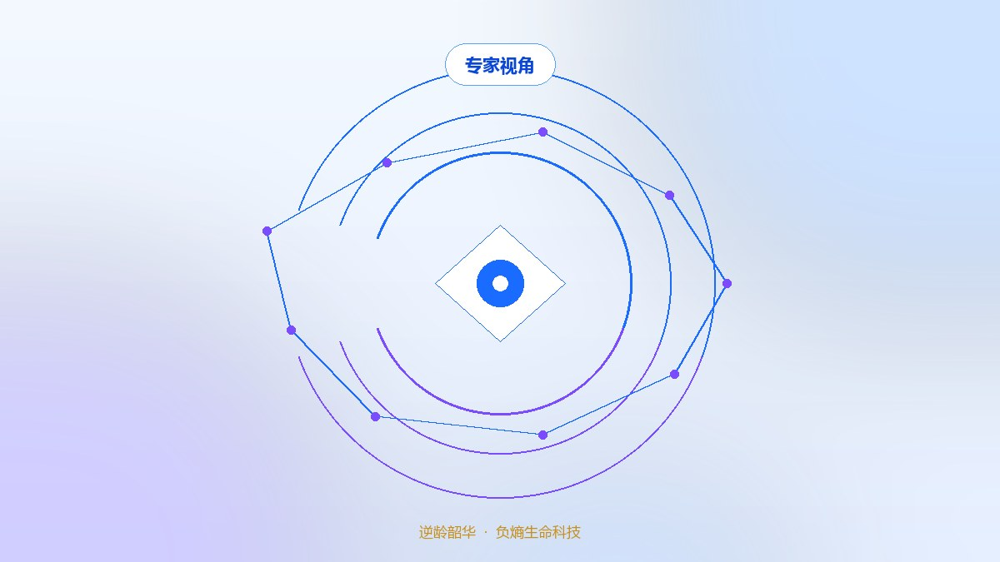

薛定谔在《生命是什么》中提出「生命以负熵为食」，用物理学的语言描述生命体维持有序状态的现象。这一表述把热力学第二定律引入对生命过程的讨论，也成为负熵概念的常见出处。
熵与热力学第二定律
熵是衡量系统无序程度的物理量。热力学第二定律指出，孤立系统的熵不会自发减少，事物倾向于从有序走向无序。房间不整理会变乱、热水不保温会变凉，都是这一规律的日常体现。
薛定谔的论断
薛定谔认为，生命体是开放系统，通过与外界交换物质与能量来维持自身的有序状态。所谓「以负熵为食」，强调的是生命过程需要持续的秩序输入，以抵消内部自发增长的熵。
日常类比与概念边界
在日常讨论中，负熵常被用来描述秩序的建立与维持。作为物理学概念，它用于解释系统的有序程度；把它直接等同于具体的健康效果，并不符合原初的表述语境。
相关内容为科学概念与公开资料整理，仅作知识分享，不构成医疗建议或功效承诺。
常见问题
熵增定律是什么？
热力学第二定律指出，孤立系统的熵不会自发减少，事物倾向于从有序走向无序，这是描述系统状态变化的基本规律。
「生命以负熵为食」出自哪里？
这一表述出自薛定谔的著作《生命是什么》，用于说明生命体需要持续的秩序输入来维持自身的有序状态。
负熵概念能否直接等同于健康效果？
不能。负熵是物理学中描述系统有序程度的概念，把它直接等同于具体的健康效果，并不符合原初的表述语境。